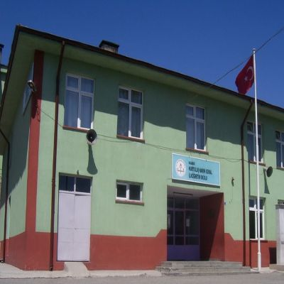

Kurtuluş Namık Kemal İlkokulu
Toki Cevizkent Bahaddin Gazi Ortaokulu
Alparslan Gazi Anadolu Lisesi

Sakarya üniversitesi
Eğitim ve Öğretim hayatıma doğduğum mahallede Karabük'ün Kurtuluş Mahallesi ilkokulunda başladım.5.sınıfa kadar burada eğitim gördüm daha sonra okumulumuz kapandığı için başka ortaokula gitmek zorunda kaldım.
Ortaokul hayatıma Toki Cevizkent Bahaddin Gazi Ortaokulu ile basladım.Önceki mahallemizden tasındıgımız icin burada egitim ve öğretim hayatıma devam edecektim.Ortaokul hayatım için benim için faydalı geçti.Bulunduğum şehrin en iyi okullarından birinde eğitim gorecektim.Okulda hem eğitim imkanları hem de hobi ve sevdiğimiz aktiviteleri gerçekleştirebileceğimiz imkanlar sunuluyordu.Daha sonra okulum ve destekleme yetiştirme kursları sayesinde Merkezi sınavlarda güzel bir derece elde ettim.
Merkezi sınavlar sonucunda bulunduğum şehirin en iyi ikinci lisesine yerleşme fırsatı buldum.Yaşanmışlıklarla dolu bir lise hayatı içerisinden Alparslan Gazi Anadolu Lisesinden 2020 yılında mezun oldum.
Üniversite Sınavından sonra yeni durağımız olan Sakarya Üniversitesine geldik.Şu anda 1.sınıf öğrencisi olarak eğitim görmekteyim.Yazılım ve ingilizce ile